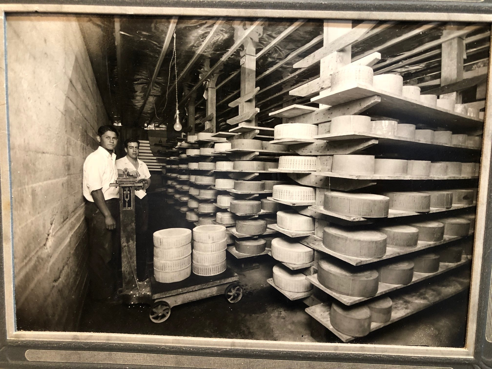
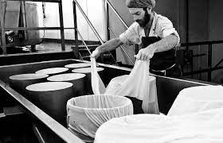
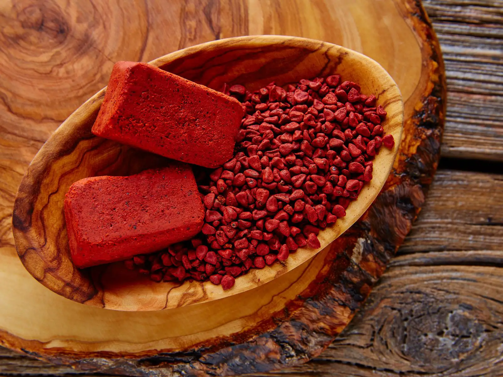
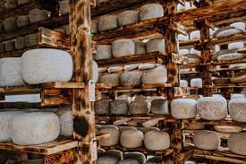

Founded in 1972 by cheese lovers who were passionate about sharing their love of Mimolette with
the world.

we are the only company in the world that produces Mimolette cheese using traditional methods.

Our Mimolette cheese is made with only the finest ingredients, including fresh cow's milk, salt, and annatto.

Mimolette Madness Mimolette cheese is aged for at least 6 months, which gives it its unique flavor and texture.
"Cheese is a gift from the gods. It is a source of nourishment, comfort, and joy. It is a culinary treasure that has been enjoyed by people
for centuries. So next time you are feeling down, reach for a piece of cheese. Let its deliciousness lift your spirits and remind you that life is good."~Google Bard